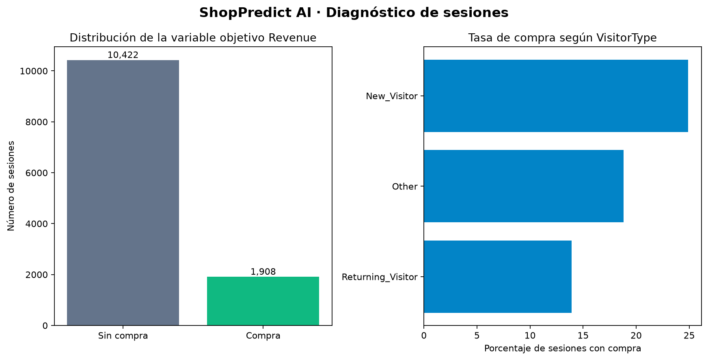
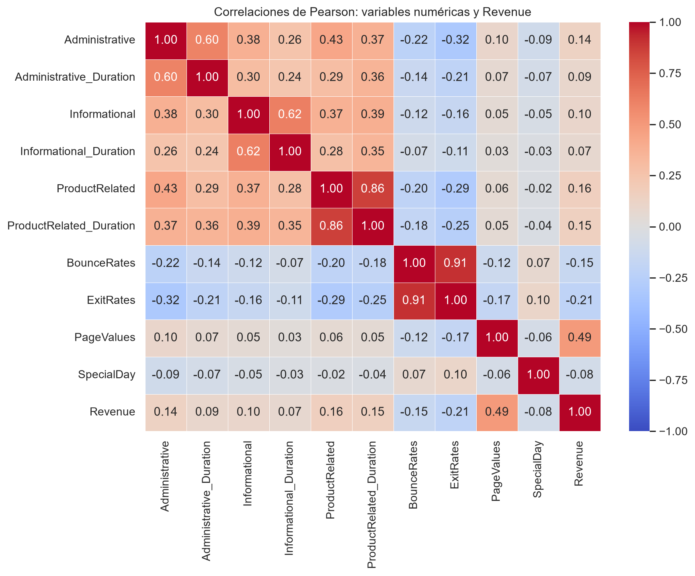
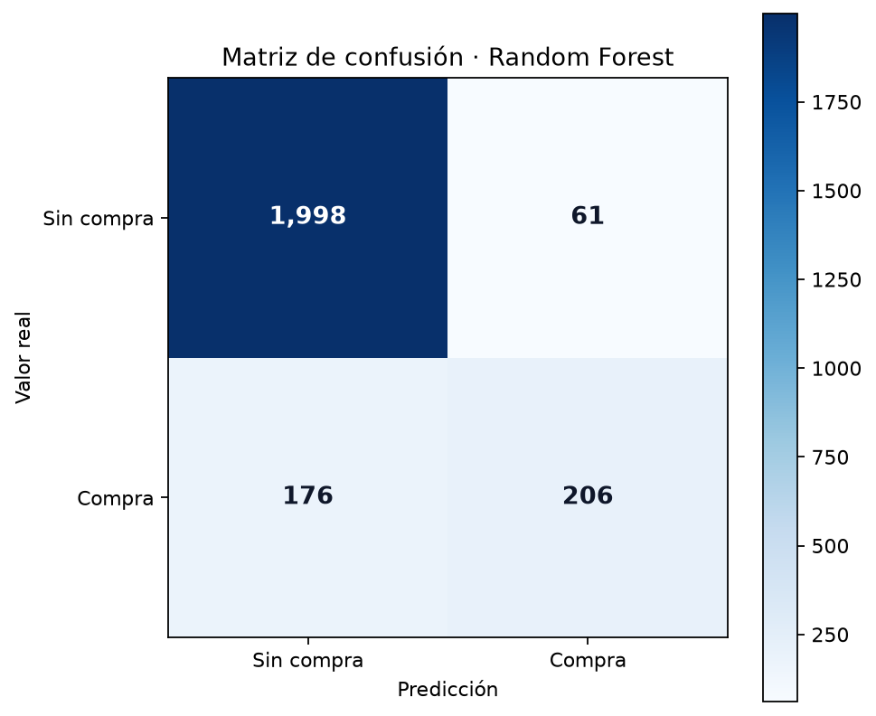

UNIMINUTO · Ingeniería de Sistemas · Ibagué · 2026
Sustentación técnica · Minería de Datos y Métodos Numéricos
ShopPredict Intención de compra
Sistema analítico y predictivo sobre el comportamiento de navegación en comercio electrónico. Integra auditoría de datos, modelado supervisado reproducible, métodos numéricos y una aplicación web con API verificable.
Inicio rápido en Visual Studio Code:npm install && npm run build && npm run dev → http://localhost:3000 (detalle completo en lámina 9).
01 · Auditoría y calidad del dataset
Depuración previa para evitar sesgos por duplicados

Flujo de auditoría del CSV
Reglas de integridad aplicadas
1
Cero valores faltantes en el archivo fuente (Online Shoppers Purchasing Intention, UCI/Kaggle).
2
125 filas duplicadas exactas detectadas y eliminadas antes de particionar para impedir fuga entre entrenamiento y prueba.
3
Desbalance de clases real: 1.908 compras (15,63 %) frente a 10.297 sesiones sin compra (84,37 %).
4
Trazabilidad estricta: se excluye cualquier identificador artificial (Session_ID) y no se confunde correlación con causalidad.
02 · Arquitectura de preparación sin fuga de datos
Transformación encapsulada en pipelines reproducibles
Codificación nominal explícita
Además de Month y VisitorType, los códigos OperatingSystems, Browser, Region y TrafficType se tratan como variables categóricas nominales mediante One-Hot Encoding.
Escalamiento y reducción (Sesión 4)
Se compararon StandardScaler, MinMaxScaler y RobustScaler, más reducción dimensional por PCA ajustados únicamente sobre entrenamiento.
Criterio frente a datos sintéticos
Las columnas sintéticas de marketing generadas en ejercicios previos quedan excluidas del modelo principal para preservar la validez empírica del dataset.
03 · Análisis exploratorio de datos (EDA)
Cuatro evidencias visuales determinantes del comportamiento
Duración en producto según compra
Mediana: 510 s sin compra vs. 1.110 s con compra.
Distribución de PageValues
PageValues = 0 en 77,86 %; con PageValues > 0 la conversión alcanza 56,34 %.
Dispersión BounceRates vs. ExitRates
Fuerte colinealidad positiva (r = 0,913); sesiones con rebote alto casi no convierten.
Matriz de correlaciones numéricas

Mayor asociación lineal con Revenue: PageValues (r = 0,493).
04 · Sesión 7 · Clasificación por reglas
Árbol de decisión: interpretabilidad y control de impureza
Esquema conceptual didáctico; no representa los umbrales reales del árbol entrenado.
Propiedades técnicas en ShopPredict
Particiona secuencialmente el espacio de atributos mediante umbrales binarios.
No requiere escalamiento de variables cuantitativas (invariante a transformaciones monótonas).
Alta trazabilidad de decisiones, aunque propenso a alta varianza sin límite de profundidad.
Gini(t) = 1 − (p₀² + p₁²)
Accuracy
Bal. Acc.
Precision
Recall
F1
ROC-AUC
0,8574
0,7407
0,5423
0,5707
0,5561
0,7407
Resultados medidos en el holdout 80/20 (2.441 filas de prueba, semilla 42).
05 · Sesión 8 · Comparación de paradigmas supervisados
Reglas, probabilidad condicional y distancia entre sesiones
Árbol de decisión (Medido)
Mecanismo: divide recursivamente reduciendo impureza de nodo.
Resultado verificado: Accuracy 0,8574 · F1 0,5561.
Naive Bayes (Conceptual)
Evidencia E: comportamiento de sesión
P(Compra | E) ∝ P(E | Compra) · P(Compra)
Comparación posterior entre clases
Mecanismo: asume independencia condicional entre predictores.
Estado en auditoría: pendiente de ejecución reproducible sobre el mismo holdout.
KNN (Conceptual)
Mecanismo: clasifica por votación de los k vecinos más cercanos (exige StandardScaler).
Estado en auditoría: pendiente de evaluación reproducible sobre la partición 80/20.
Transparencia metodológica: no se reportan porcentajes ni matrices inventadas para Naive Bayes ni KNN; únicamente los tres modelos evaluados en el pipeline poseen métricas oficiales en la auditoría.
06 · Resultados verificados y matriz de confusión
Random Forest logró el mayor F1 (0,6348) en la partición 80/20

Modelo
Escala
Acc.
Prec.
Recall
F1
AUC
Árbol de decisión
Original
0,8574
0,5423
0,5707
0,5561
0,7407
Random Forest
Original
0,9029
0,7715
0,5393
0,6348
0,9248
Regresión logística
Standard
0,8873
0,7560
0,4136
0,5347
0,8997
Aciertos en compra (VP)
206 / 382
Precision 77,15 % · Recall 53,93 %
Falsos negativos (FN)
176 compras
61 falsos positivos · 1.998 VN
Evaluación sobre 2.441 sesiones de prueba (semilla 42). Describe esta partición puntual; no equivale a garantía de desempeño en producción.
07 · Sesión 9 · Aprendizaje no supervisado
Segmentación de sesiones: diseño metodológico por validar
Flujo K-means propuesto
Variables candidatas: ProductRelated, ProductRelated_Duration, BounceRates, ExitRates y PageValues.
Clustering jerárquico (Ward)
Esquema conceptual; no representa clústeres reales ni una corrida calculada de ShopPredict.
Alcance auditado: no se presentan segmentos, valores del codo ni silueta como hallazgos medidos hasta ejecutar el experimento reproducible y actualizar la auditoría.
08 · Ingeniería del sistema, conclusiones y operación
Arquitectura completa verificada localmente y preparada para nube
Conclusiones verificadas
Comportamiento: la duración mediana en producto se duplica con compra (1.110 s vs. 510 s) y PageValues > 0 concentra conversión de 56,34 %.
Desempeño supervisado: Random Forest lideró el F1 (0,6348) en la partición 80/20, pero los 176 falsos negativos exigen cautela operativa.
Rigor científico: se separan métricas medidas de métodos pendientes y la validación CSV es temporal (persisted: false).
Ejecución principal (VS Code / carpeta) y opción web alternativa
1
Principal · Visual Studio Code y carpeta: abre index.html directo, usa ABRIR_EN_EDGE.bat o pulsa F5 (npm install && npm run build && npm run dev).
2
Aplicación local (localhost:3000): accede a / (Dashboard), /index.html (Presentación) y /docs (Control y contrato API).
3
Opción alternativa · Acceso web (entorno de desarrollo / nube): enlace en ais-dev-qoly54eogadnudoldqzznt-513240885441.us-west1.run.app o despliegue propio con gcloud run deploy shoppredict --source ..
Eje X (independiente):ProductRelated (páginas vistas).
Eje Y (dependiente):ProductRelated_Duration (segundos).
Para qué se aplicó: medir la tendencia continua del tiempo por página en las 12.205 sesiones (Random Forest clasifica compra; la regresión estima duración).
Fórmulas aplicadas y ecuación resultante
m = [n·Σxy − Σx·Σy] / [n·Σx² − (Σx)²] | b = ȳ − m·x̄
ŷ = −0,857242 + 37,566054x
Coeficiente R²
0,77093
RMSE global
844,436 s
Interpretación rápida: cada página adicional de producto suma ~37,57 s esperados y explica el 77,1 % de la variabilidad.
Modelo manipulable en tiempo real
x = 20 pág.750 s
La recta minimiza la suma de errores al cuadrado Σ(yᵢ − ŷᵢ)² sobre todo el conjunto de datos.
Para qué se aplicó: estima valores intermedios exactos (en x=20 da ≈ 792,7 s). Se usan 4 nodos (grado 3) para evitar oscilaciones de Runge.
Curva interpolante manipulable
x = 20 pág.793 s
Los 4 puntos índigo son exactos (error = 0); el marcador ámbar muestra el valor interpolado P₃(x).
12 · Métodos numéricos · 3/3
Comparación crítica: regresión global vs. interpolación exacta
Diferencia estructural
Criterio
Regresión lineal (ŷ)
Lagrange (P₃)
Datos usados
12.205 sesiones
4 nodos elegidos
Error en nodos
Minimiza Σeᵢ² (RMSE 844 s)
Cero exacto en nodos
Ante ruido
Estable y suavizada
Oscila al subir grado
Uso recomendado
Tendencia y extrapolación
Interpolar en [3,77 ; 84,66]
Evaluar x = 20Δ 42 s
Conclusión para el jurado: usamos Regresión lineal como modelo global estable frente al ruido del e-commerce y Lagrange P₃ como ajuste puntual exacto entre los 4 perfiles de referencia.
Superposición comparativa (Regresión vs. Lagrange)
Línea índigo: recta global ŷ(x). Curva verde azulado: polinomio P₃(x) pasando por los 4 nodos.